The “Grow Island” Style — How It’s Shot, and How to Shoot It
A production guide to a reality-TV-flavored photoreal comic style, reverse-engineered from the 63-page Grow Island pilot and rebuilt as a reusable preset.
All illustrations generated with GPT Image 2 & Nano Banana 2 · 1K · 16:9
What this style is
Grow Island looks photoreal because the render is photoreal — the same DAZ3D-Iray CGI family as the default house style. What makes it a distinct style is everything wrapped around the render: how the page is built, how the camera behaves, how color and light are used, how dialogue is lettered, and how transformations are revealed.
In one sentence: one full-bleed widescreen cinematic still per page, warm tropical-resort palette, eye-level conversational framing, comic lettering baked into the image, and growth shown as before/after pose-reuse pairs.
It ships as the grow-island preset in style-lock/styles/grow-island/. To use it, just put grow-island style in your build prompt.
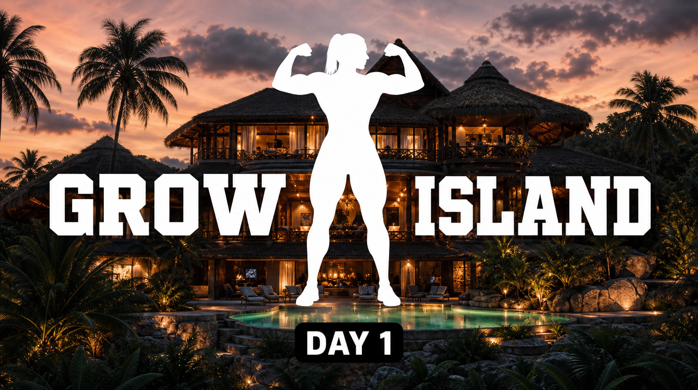
Fig. 1 — The chapter-title device. A flat white knockout silhouette of a muscular woman in a double-biceps flex splits the GROW ISLAND logo, over a photoreal villa establishing shot, with a small black DAY 1 time-tab. The figure and type are 2D overlays; the villa is photoreal CGI.
How to make a comic in this style
Lock the style. Copy the Template block from styles/grow-island/preset.md into your project’s style.md. Fill the cast wardrobe-accent table (one hue per character), location constants, growth tiers. It hard-codes 16:9, one full-bleed splash per page, baked lettering, bokeh’d backgrounds.
Break down the script. Run script-breakdown — one image per page, so each shotlist row = one prompt. Tag each with shot distance + camera angle and capture dialogue/SFX (they bake in).
Lock identity. One face/hair ref + current-tier body ref per character. Keep the muscle-size lineup for tier changes.
QA & assemble.continuity-check (monotonic size, stable accents, face identity), then page-composer for layout/PDF only — it doesn’t letter; text is already baked.
Content-policy tip (learned producing this article): on stricter classifiers (GPT Image 2), swimwear + body-emphasis framing trips the NSFW filter even for tasteful athletic content. Two figures here were rejected as swimsuit shots and passed instantly when reframed into athletic activewear. When a body-focused panel keeps getting blocked, add coverage and widen the frame — don’t burn identical retries.
The art direction, principle by principle
Page construction — one cinematic still, never a grid
The defining structural trait: every page is a single full-bleed image. No multi-panel grids, no gutters — anywhere across all 63 source pages. The negative prompt bans multi-panel grid and portrait aspect because the base model defaults to taller framing and invents gutters otherwise.
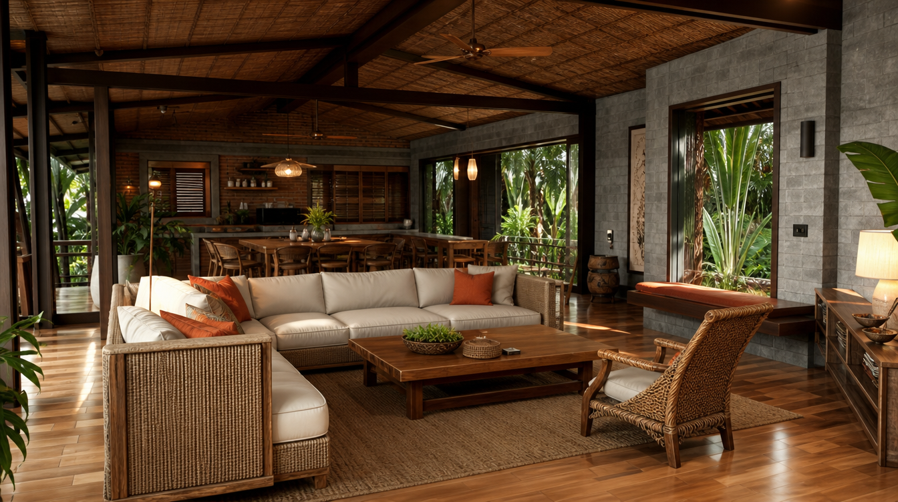
Fig. 2 — Establishing shot, warm interior mode. The open-plan tropical villa lounge — rattan, cream sofas, orange cushions, thatched beams, honey wood. Warm, soft, low-contrast. This is the home-base set.
Shot-distance rhythm — distance tracks importance
The closer the camera, the more the beat is about the body. Dialogue lives at medium; the instant a body changes, the camera crops in tight on just that part.
Function
Distance
Subject fills
Dialogue / intro
Medium → medium-close
55–90% frame H
Scene-setting / ensemble
Wide / establishing
bodies 15–40% H
Growth beat
Extreme body-part crop (often faceless)
85–95% H
Transformation payoff
Full-body reveal
~70% H
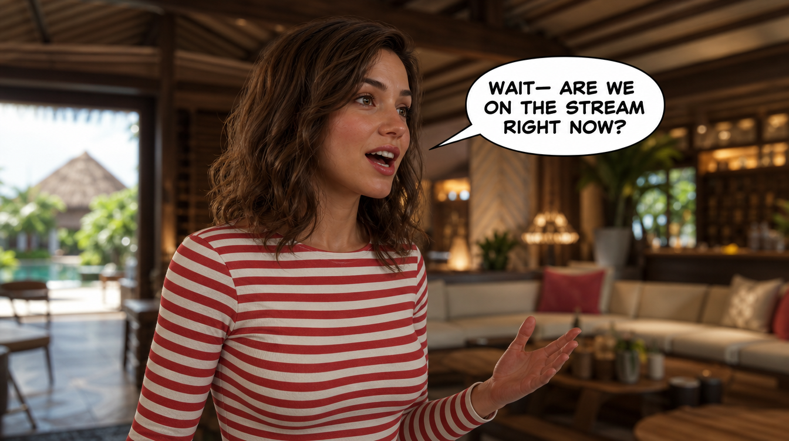
Fig. 3 — The workhorse: a medium, eye-level dialogue shot. One subject dominant, background softened to bokeh, an expressive face turned off-camera, and a baked white all-caps speech bubble with a tail to the speaker’s mouth.
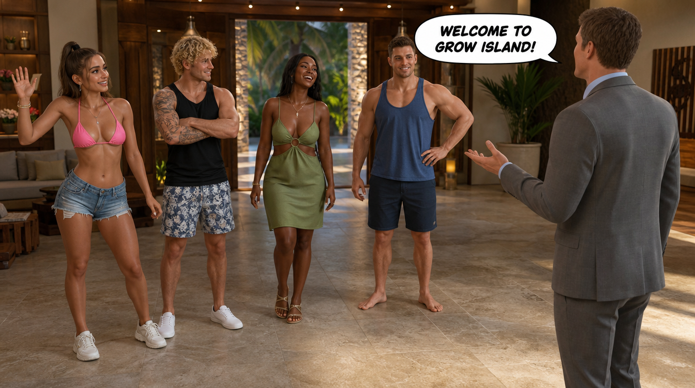
Fig. 4 — Ensemble wide. Contestants in a loose line-up facing the host (grey suit, right). Note the deliberately varied poses and gazes — the anti-“police-lineup” rule — and the host’s bubble carrying the scene.
Camera angle — eye-level is home base
The camera sits at eye level by default; that calm baseline is what makes a rare angle land. Angle changes are used for meaning: low-angle to monumentalize a growing or victorious figure, slight high-angle for intimacy, dramatic high/dutch for stair/transition beats, one bird’s-eye for an exterior finale.
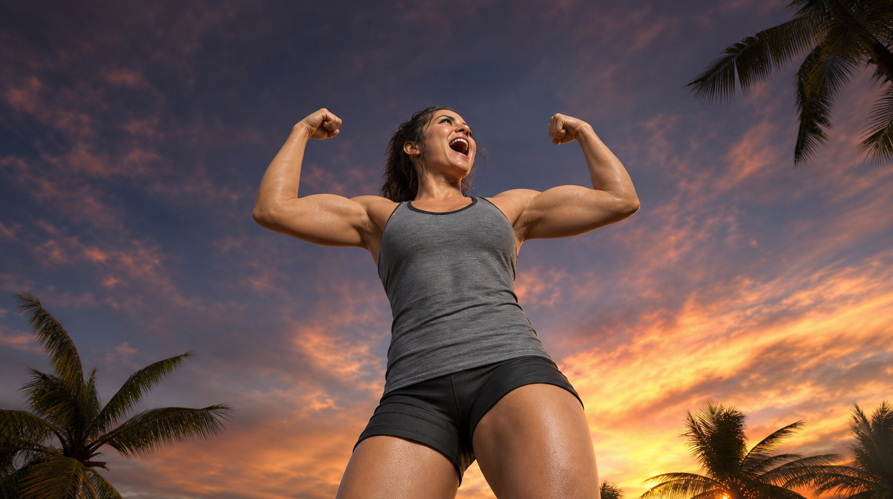
Fig. 5 — Low-angle “hero” framing looking up at a triumphant flex against open sky. The worm’s-eye angle makes the figure monumental — reserved for victory/growth peaks. (Activewear; see the policy note.)
Color & lighting — two modes, one accent
A warm tropical-resort base (tans, cream, golden wood, bronze skin), switched between two lighting modes per scene, with one high-chroma wardrobe accent per character doing the work of legibility against the neutral set.
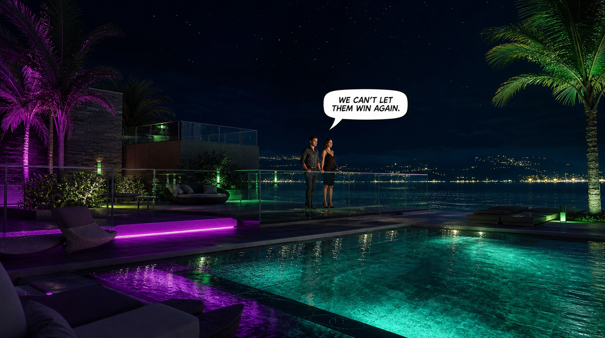
Fig. 6 — Cool-night mode: navy sky, dark teal water, charcoal architecture, low-key drama, warm key on the faces — pushed further with magenta/lime neon. The same world as Fig. 2, inverted in temperature.
Faces & gaze — expressive, and never at the camera
Close-ups carry strong, specific emotion. The hard rule: characters look at each other or off-camera, never at the viewer — with two exceptions: the host addressing the show, and the confessional aside.
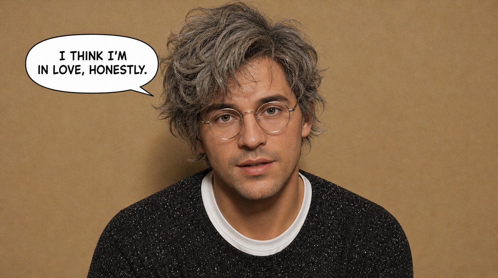
Fig. 7 — The reality-TV confessional: a single character against a plain flat wall, looking directly into the lens (the sanctioned fourth-wall break), with a bubble delivering the aside. Plain backdrop, no bokeh — the cue that says “interview,” not “scene.”
Lettering — baked in, three registers
Lettering is part of the render, not a post step: speech (white oval bubbles, thin black outline, all-caps), character-ID plates (“NAME – ROLE”), and title/time tabs (“DAY 1”).
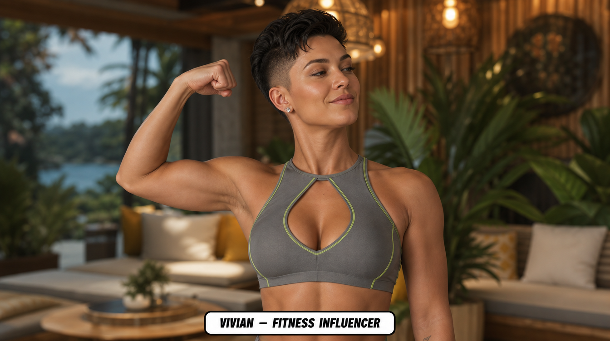
Fig. 8 — The intro ID-plate convention: a bottom-edge white rounded rectangle reading “VIVIAN – FITNESS INFLUENCER.” GPT Image 2’s text rendering keeps it crisp — a big reason this style bakes lettering rather than deferring it.
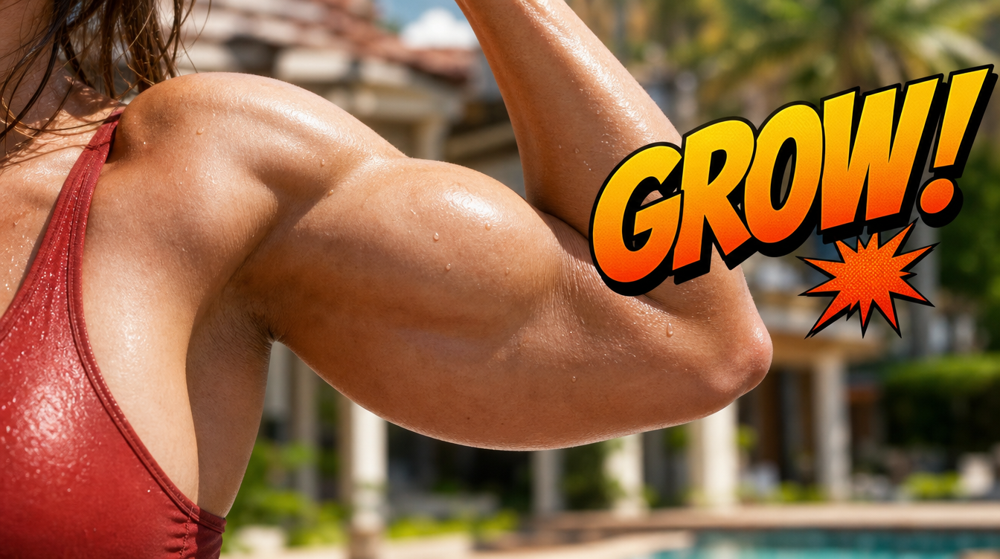
Fig. 9 — SFX register: a “GROW!” word in the signature orange→yellow gradient with black outline and drop shadow, placed against the muscle it describes. Non-verbal sounds (GASP, PHEW) instead go inside ordinary bubbles.
The growth-reveal grammar — before/after pose-reuse pairs
The signature device. Transformations are on-demand, body-part-at-a-time, and monotonic (a grown body never shrinks back). Each beat is two consecutive pages that share an identical composition — a “before,” then an “after” with the localized size increase plus an adjacent SFX. The “after” is chained off the “before” job so pose, wardrobe, and face carry forward exactly.
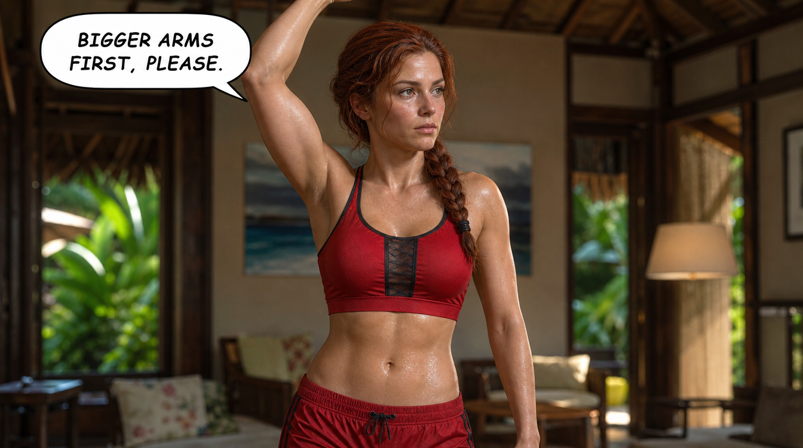
Fig. 10 — BEFORE. Clean, neutral composition; arm raised presenting a modest bicep; a bubble naming the request (“BIGGER ARMS FIRST, PLEASE”). This frame anchors its pair.
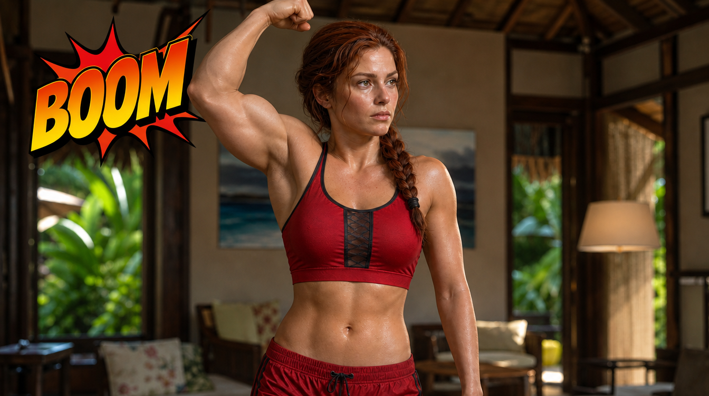
Fig. 11 — AFTER, generated by chaining off Fig. 10’s job — pose/wardrobe/face stay identical, only the bicep grows, and a “BOOM” SFX marks the change. This pairing keeps growth reading as continuous, not a jarring re-roll.
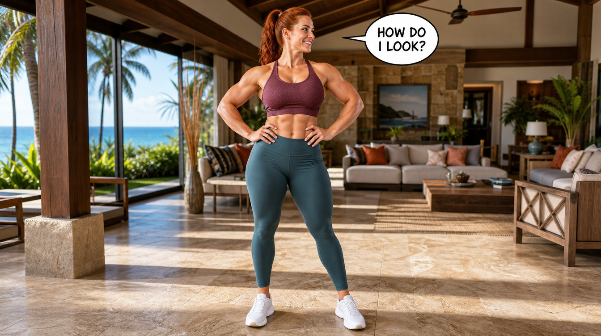
Fig. 12 — The payoff: a full-body reveal at standing distance with the background brought to full sharpness (reveals are the one place backgrounds resolve, vs. dialogue bokeh), capped with a “HOW DO I LOOK?” bubble. An arc always lands on a frame like this.
Reproduction checklist
One full-bleed 16:9 image per page. No grids, no gutters.
Eye-level by default; angle changes only for meaning.
Distance tracks importance: medium for talk, tight crops for growth, full-body for reveals.
Warm-resort base + two lighting modes; one fixed wardrobe-accent hue per character.
Backgrounds softened on close/medium; sharp only on reveals.